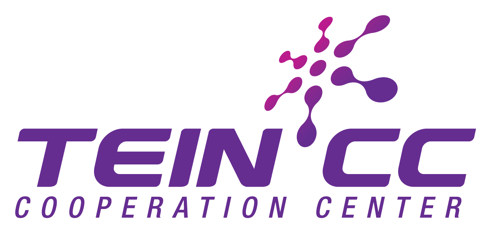

Supported By

A comprehensive 4-semester Master's program launched by the University of Colombo School of Computing (UCSC), designed specifically for IT professionals and NREN staff in developing Asian countries.
Comprehensive coverage of critical cybersecurity domains including Cryptography, Malware Analysis, Network Security, Digital Forensics, Mobile Security, Risk Management, and Incident Response.
Innovative combination of asynchronous eLearning and hands-on laboratory sessions, with in-person training in Colombo and seamless transition to online delivery during global challenges.
Real-world knowledge emphasis preparing students to become trainers and security leaders in their home countries, with rigorous examinations and practical assessments.
Conducted in Colombo with 11 of 14 students participating despite April 21 security incidents in Sri Lanka. Deferred exam options provided for affected students.
Full participation achieved with all 14 students completing hands-on training and examinations in Colombo.
Successfully adapted to fully online delivery due to COVID-19 pandemic, utilizing LMS and virtual laboratory environments.
Program completion with 3 students earning Distinction. All qualifying graduates eligible for convocation ceremony.
Successfully trained 14 cybersecurity professionals from Afghanistan, Bangladesh, India, Myanmar, Nepal, Sri Lanka, and Thailand, establishing a foundation for sustainable regional cybersecurity capacity.
Developed and published high-quality, regionally-relevant cybersecurity courseware accessible through the Learning Management System for continued use and reference.
Demonstrated program resilience by successfully completing all 4 semesters despite significant challenges including security incidents and global pandemic disruptions.
Established framework for continuation as an international master's degree with graduate assistance in local training delivery and remote examination capabilities.
Host institution providing academic leadership, courseware development, and examination services for the international cybersecurity master's program.
Partner NRENs across 7 Asian countries providing student nominations and local support for program participants in their respective regions.
Project partnership with TEIN*CC and academic advisory support from the University of Strathclyde ensuring program quality and regional relevance.
Quality Education
Industry, Innovation and Infrastructure
Partnerships for the Goals